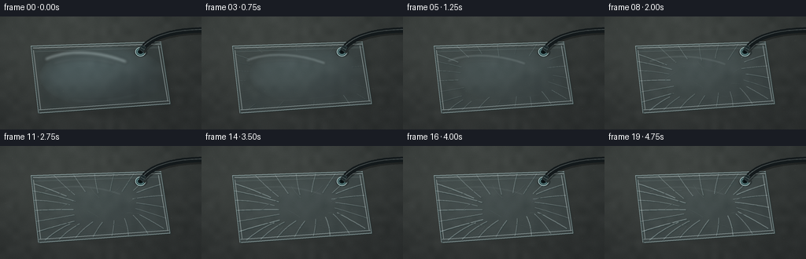
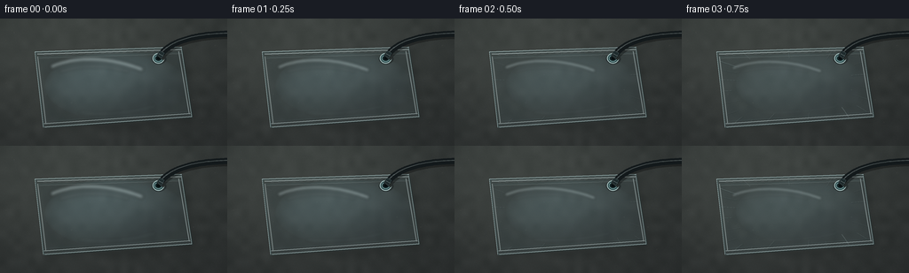

CODING AGENTS AS PIXEL WORLD MODELS
traex/GPT-5.6-Sol · mechanics_0026
点击播放 · 原生 RGB 像素
逐轮保存的候选
回放视频、检查图与代码变化。
每份候选均可单独播放。实际图片检查记录在下方工具轨迹中。
候选 01播放与检查图
点击播放 · 原生 RGB 像素


展开代码变化
--- 上一保存版本
+++ 本次保存版本
@@ -0,0 +1,245 @@
+from pathlib import Path
+import math
+import numpy as np
+from PIL import Image, ImageDraw, ImageFilter
+import artifact_io
+
+# Deterministic procedural rendering; no external imagery.
+W, H, N = 256, 144, 20
+S = 4
+SW, SH = W*S, H*S
+rng = np.random.default_rng(260026)
+
+
+def scpt(p):
+ return (int(round(p[0]*S)), int(round(p[1]*S)))
+
+
+def polyline(draw, points, fill, width):
+ draw.line([scpt(p) for p in points], fill=fill, width=max(1, int(width*S)), joint="curve")
+
+
+def qcurve(p0, p1, p2, steps=32):
+ vals = []
+ for u in np.linspace(0, 1, steps):
+ v = 1-u
+ vals.append((v*v*p0[0] + 2*v*u*p1[0] + u*u*p2[0],
+ v*v*p0[1] + 2*v*u*p1[1] + u*u*p2[1]))
+ return vals
+
+
+def cubic(p0, p1, p2, p3, steps=42):
+ vals=[]
+ for u in np.linspace(0,1,steps):
+ v=1-u
+ vals.append((v**3*p0[0]+3*v*v*u*p1[0]+3*v*u*u*p2[0]+u**3*p3[0],
+ v**3*p0[1]+3*v*v*u*p1[1]+3*v*u*u*p2[1]+u**3*p3[1]))
+ return vals
+
+# Matte worktop base, with fixed fine texture and directional light.
+yy, xx = np.mgrid[0:SH, 0:SW]
+X, Y = xx/S, yy/S
+radial = np.exp(-(((X-88)/148)**2 + ((Y-42)/115)**2))
+base = np.empty((SH, SW, 3), dtype=np.float32)
+base[:] = (44, 48, 47)
+base += radial[..., None] * np.array([20, 21, 19])
+base += (Y/H)[..., None] * np.array([-6, -7, -6])
+noise = rng.normal(0, 1.8, (SH, SW, 1))
+# Blend fine and coarse mottling.
+coarse_small = rng.normal(0, 1, (18, 32))
+coarse = np.array(Image.fromarray(np.uint8(np.clip((coarse_small+3)*35,0,255))).resize((SW,SH), Image.Resampling.BICUBIC), dtype=float)
+coarse = (coarse - coarse.mean())/max(1,coarse.std())
+base += noise + coarse[...,None]*1.4
+base = np.uint8(np.clip(base, 0, 255))
+background = Image.fromarray(base, 'RGB')
+# Subtle laminate grain and wear marks.
+gr = Image.new('RGBA', (SW,SH), (0,0,0,0)); gd=ImageDraw.Draw(gr)
+for i in range(26):
+ y = rng.uniform(3,H-3); x0=rng.uniform(-30,170); length=rng.uniform(45,180)
+ wob=rng.uniform(0.6,2.4)
+ pts=[(x0+k*length/32, y+math.sin(k*.55+rng.uniform(-.15,.15))*wob) for k in range(33)]
+ polyline(gd, pts, (18,22,21,int(rng.uniform(5,13))), rng.choice([.25,.35,.5]))
+for i in range(42):
+ x=rng.uniform(2,W-2); y=rng.uniform(2,H-2); r=rng.choice([.18,.25,.4,.7])
+ gd.ellipse((int((x-r)*S),int((y-r)*S),int((x+r)*S),int((y+r)*S)), fill=(210,207,185,int(rng.uniform(5,16))))
+gr=gr.filter(ImageFilter.GaussianBlur(.18*S))
+background=Image.alpha_composite(background.convert('RGBA'),gr)
+
+# Pouch: subtly perspective-distorted quadrilateral.
+bag_poly = [(39.5,37.5),(204.0,32.0),(216.0,111.0),(49.0,123.0)]
+inner_poly = [(45,43),(198.5,38),(209.5,106),(54,117)]
+
+# wrinkle definitions: edge -> bending point -> destination, plus onset and strength
+creases = [
+ ((43,48),(65,55),(96,69),.00,1.00), ((41.5,57),(70,62),(111,75),.13,.95),
+ ((42,69),(69,69),(101,78),.03,.72), ((43,82),(70,80),(111,81),.22,.90),
+ ((45,96),(72,91),(108,85),.05,.78), ((47,109),(72,101),(112,91),.17,1.00),
+ ((57,120),(73,105),(99,95),.10,.85), ((75,119),(88,104),(113,93),.28,.82),
+ ((96,117),(106,103),(125,92),.06,.73), ((118,116),(126,101),(135,91),.34,.82),
+ ((142,115),(145,100),(145,89),.15,.78), ((163,114),(162,99),(155,86),.25,.96),
+ ((188,112),(179,96),(163,83),.04,.86), ((208,105),(187,92),(165,81),.20,.95),
+ ((211,92),(186,83),(163,77),.00,.68), ((209,78),(184,73),(161,71),.30,.90),
+ ((207,63),(185,64),(158,69),.08,.82), ((204,49),(186,54),(163,64),.18,.88),
+ ((192,35),(178,49),(160,65),.29,.74), ((170,35),(161,48),(151,64),.00,.58),
+ ((145,35),(141,48),(139,64),.22,.67), ((120,35),(121,50),(126,66),.11,.72),
+ ((93,36),(101,50),(115,67),.31,.82), ((68,37),(82,52),(105,70),.17,.79),
+]
+# secondary branch wrinkles, only pronounced late
+branches = [
+ ((73,61),(87,55),(103,57),.36,.58), ((77,80),(89,69),(106,66),.43,.60),
+ ((78,96),(94,99),(109,104),.51,.62), ((104,102),(96,111),(92,118),.56,.53),
+ ((125,91),(115,83),(103,80),.48,.54), ((143,99),(156,102),(169,108),.41,.59),
+ ((161,85),(175,85),(189,89),.53,.63), ((164,71),(177,62),(189,58),.39,.55),
+ ((139,63),(151,55),(159,44),.58,.51), ((126,66),(116,57),(111,45),.47,.56),
+]
+
+
+def pouch_mask():
+ m=Image.new('L',(SW,SH),0); ImageDraw.Draw(m).polygon([scpt(p) for p in bag_poly],fill=255)
+ return np.asarray(m,dtype=np.float32)/255
+BAGMASK = pouch_mask()
+
+frames=[]
+for fi in range(N):
+ t=fi/(N-1)
+ # Exponential pressure decay gives a legible time-lapse: rapid collapse, then settling.
+ air = 0.035 + 0.965*math.exp(-3.35*t)
+ collapse = 1-air
+ settle = max(0, (t-.68)/.32)
+ im=background.copy()
+
+ # Raised pouch shadow. It tightens and loses opacity as the air volume disappears.
+ sh=Image.new('RGBA',(SW,SH),(0,0,0,0)); sd=ImageDraw.Draw(sh)
+ offset=1.3+2.2*air
+ shadow_poly=[(x+offset,y+offset*.9) for x,y in bag_poly]
+ sd.polygon([scpt(p) for p in shadow_poly],fill=(3,7,8,int(20+27*air)))
+ # bulge/contact shadow along lower-right, strongest while inflated
+ sd.ellipse((int((53+air*3)*S),int((47+air*2)*S),int((213+air*2)*S),int((124+air*3)*S)),
+ fill=(0,3,4,int(13+24*air)))
+ sh=sh.filter(ImageFilter.GaussianBlur((1.7+2.1*air)*S))
+ im=Image.alpha_composite(im,sh)
+
+ # Physical body shading. Transparent film lets the table texture show through.
+ arr=np.asarray(im.convert('RGB'),dtype=np.float32)
+ # As air leaves, the smooth air pocket contracts slightly toward the valve.
+ cx=130+10*collapse; cy=76-4*collapse
+ rx=80-16*collapse; ry=40-9*collapse
+ rho=((X-cx)/rx)**2+((Y-cy)/ry)**2
+ z=np.power(np.clip(1-rho,0,1),.58)*air
+ # lit dome: cool upper-left sheen and warmer transparent lower slope
+ slope_x=(X-cx)/(rx*.82); slope_y=(Y-cy)/(ry*.82)
+ diffuse=np.clip(.55-.44*slope_x-.62*slope_y,0,1)*z
+ body_alpha=BAGMASK*(.10 + .045*collapse + .08*z)
+ film_color=np.zeros_like(arr); film_color[:]=(139,177,184)
+ arr=arr*(1-body_alpha[...,None])+film_color*body_alpha[...,None]
+ arr += BAGMASK[...,None]*(diffuse[...,None]*np.array([13,18,20]))
+ # lower-right contour is subtly darker while domed
+ arr -= BAGMASK[...,None]*(np.clip((slope_x+slope_y-.12),0,1)*z)[...,None]*np.array([7,8,7])
+ im=Image.fromarray(np.uint8(np.clip(arr,0,255)),'RGB').convert('RGBA')
+
+ # Smooth moving specular reflection over inflated film.
+ gloss=Image.new('RGBA',(SW,SH),(0,0,0,0)); gl=ImageDraw.Draw(gloss)
+ spec_alpha=int(85*air+10)
+ pth=cubic((57,55+3*collapse),(83,42+7*collapse),(123,43+9*collapse),(161-10*collapse,58+4*collapse),46)
+ polyline(gl,pth,(228,247,247,spec_alpha),2.1+3.2*air)
+ pth2=qcurve((67,60),(105,48+6*collapse),(145-9*collapse,60),38)
+ polyline(gl,pth2,(246,255,255,int(36+62*air)),.65+1.1*air)
+ # small lower reflection rolls inward as volume drops
+ pth3=qcurve((89,106),(126,112-9*collapse),(175,99),38)
+ polyline(gl,pth3,(201,229,229,int(10+28*air)),1.2+1.2*air)
+ gloss=gloss.filter(ImageFilter.GaussianBlur((.6+1.2*air)*S))
+ # Keep broad gloss strictly inside pouch.
+ gm=np.asarray(gloss,dtype=np.uint8).copy(); gm[...,3]=(gm[...,3].astype(float)*BAGMASK).astype(np.uint8)
+ im=Image.alpha_composite(im,Image.fromarray(gm,'RGBA'))
+
+ # Forming crease network: each crease grows from a welded edge as the sheets meet.
+ crease_layer=Image.new('RGBA',(SW,SH),(0,0,0,0))
+ cd=ImageDraw.Draw(crease_layer)
+ for idx,(p0,p1,p2,onset,strength) in enumerate(creases):
+ reveal=np.clip((collapse-onset)/max(.001,1-onset),0,1)
+ if reveal<=0: continue
+ # Curves extend smoothly inward; minute settling avoids static cross-fade appearance.
+ bend=(p1[0]+math.sin(idx*1.73+t*3.1)*.65*collapse,
+ p1[1]+math.cos(idx*1.19+t*2.4)*.55*collapse)
+ full=qcurve(p0,bend,p2,32)
+ count=max(2,int(2+(len(full)-2)*reveal))
+ pts=full[:count]
+ a=int((24+92*reveal)*strength)
+ w=.45+1.00*reveal*strength
+ # dark trough to lower-right and bright razor edge to upper-left
+ polyline(cd,[(x+.7,y+.8) for x,y in pts],(21,42,44,int(a*.62)),w*1.35)
+ polyline(cd,pts,(220,244,243,a),w)
+ if reveal>.63:
+ polyline(cd,[(x-.35,y-.45) for x,y in pts],(255,255,255,int((reveal-.63)*75*strength)),.32)
+ for idx,(p0,p1,p2,onset,strength) in enumerate(branches):
+ reveal=np.clip((collapse-onset)/max(.001,1-onset),0,1)
+ if reveal<=0: continue
+ pts=qcurve(p0,p1,p2,26)[:max(2,int(2+24*reveal))]
+ a=int(72*reveal*strength)
+ polyline(cd,[(x+.55,y+.65) for x,y in pts],(25,43,43,int(a*.65)),.8)
+ polyline(cd,pts,(224,243,241,a),.5)
+ # A tiny blur integrates the wrinkles into the translucent plastic.
+ crease_layer=crease_layer.filter(ImageFilter.GaussianBlur(.20*S))
+ cm=np.asarray(crease_layer,dtype=np.uint8).copy(); cm[...,3]=(cm[...,3].astype(float)*BAGMASK).astype(np.uint8)
+ im=Image.alpha_composite(im,Image.fromarray(cm,'RGBA'))
+
+ # Welded perimeter and seals stay rigid while the center collapses.
+ seams=Image.new('RGBA',(SW,SH),(0,0,0,0)); d=ImageDraw.Draw(seams)
+ outline=[scpt(p) for p in bag_poly]
+ d.line(outline+[outline[0]],fill=(202,231,232,150),width=1*S,joint='curve')
+ # outside edge darkens the transparent outline
+ d.line([scpt((x+.8,y+1.0)) for x,y in bag_poly]+[scpt((bag_poly[0][0]+.8,bag_poly[0][1]+1))],fill=(35,62,64,70),width=1*S,joint='curve')
+ # heat seal rails at the top
+ polyline(d,[(42,39.9),(203.7,34.7)],(230,247,246,135),1.0)
+ polyline(d,[(43.2,43.4),(204.4,38.3)],(71,108,110,105),.7)
+ polyline(d,[(44.0,44.7),(204.7,39.6)],(218,241,241,80),.45)
+ # bottom and side weld bands
+ polyline(d,[(49.6,118.7),(214.3,107.2)],(229,247,246,115),1.1)
+ polyline(d,[(52.4,115.8),(211.0,105.2)],(71,103,105,72),.55)
+ polyline(d,[(42.2,43),(51.5,119)],(228,246,245,92),1.1)
+ polyline(d,[(201.1,37),(212.9,108)],(228,246,245,100),1.0)
+ # crimp marks in top heat seal
+ for k in range(18):
+ x=49+k*8.1
+ y=41.3-(x-49)*.032
+ polyline(d,[(x,y),(x+3.1,y-.10)],(255,255,255,38),.35)
+ im=Image.alpha_composite(im,seams)
+
+ # Circular one-way valve and connected extraction hose (stationary apparatus).
+ hardware=Image.new('RGBA',(SW,SH),(0,0,0,0)); hd=ImageDraw.Draw(hardware)
+ vx,vy=178.5,45.0
+ # valve's soft contact shadow
+ hd.ellipse((int((vx-8)*S),int((vy-5.5)*S),int((vx+8.8)*S),int((vy+6.8)*S)),fill=(3,8,10,75))
+ hd.ellipse((int((vx-6.7)*S),int((vy-5.8)*S),int((vx+6.7)*S),int((vy+5.8)*S)),fill=(39,65,67,255),outline=(184,211,209,230),width=1*S)
+ hd.ellipse((int((vx-4.7)*S),int((vy-3.9)*S),int((vx+4.7)*S),int((vy+3.9)*S)),fill=(20,35,37,255),outline=(104,142,143,255),width=1*S)
+ hd.ellipse((int((vx-2)*S),int((vy-1.6)*S),int((vx+2)*S),int((vy+1.6)*S)),fill=(7,13,15,255))
+ # hose curves out of frame at upper right; broad dark tube + narrow reflection
+ hose=cubic((179.5,43.2),(188,28),(214,17),(261,17),54)
+ polyline(hd,[(x+1.1,y+1.6) for x,y in hose],(0,0,0,80),8.5)
+ polyline(hd,hose,(19,25,27,255),7.1)
+ polyline(hd,[(x-.55,y-.75) for x,y in hose],(77,86,87,190),1.15)
+ # rigid connector at valve
+ conn=[(176.5,40.8),(179.8,36.2),(185.1,39.0),(181.7,45.1)]
+ hd.polygon([scpt(p) for p in conn],fill=(30,42,44,255),outline=(99,119,120,255))
+ polyline(hd,[(178.8,39.6),(183.5,41.9)],(170,186,185,160),.65)
+ hardware=hardware.filter(ImageFilter.GaussianBlur(.08*S))
+ im=Image.alpha_composite(im,hardware)
+
+ # Restrained corner status marks printed on the bag; physical, not an overlay.
+ mark=Image.new('RGBA',(SW,SH),(0,0,0,0)); md=ImageDraw.Draw(mark)
+ # evacuation direction chevrons near valve, becoming more visible on flat film
+ ma=int(34+32*collapse)
+ polyline(md,[(160,45),(164,48),(160.5,51)],(55,89,91,ma),.55)
+ polyline(md,[(164,45),(168,48),(164.5,51)],(55,89,91,ma),.55)
+ # tiny heat-seal batch ticks
+ for k in range(4):
+ polyline(md,[(61+k*3.1,113.5-k*.2),(62.5+k*3.1,113.4-k*.2)],(54,83,84,45),.4)
+ im=Image.alpha_composite(im,mark)
+
+ # Downsample provides natural anti-aliasing and photographic softness.
+ frame=im.convert('RGB').resize((W,H),Image.Resampling.LANCZOS)
+ frames.append(np.asarray(frame,dtype=np.uint8))
+
+frames=np.stack(frames)
+artifact_io.save(frames, Path(__file__).resolve().parent)
+print('saved',frames.shape,frames.dtype)
可观测工具轨迹
实际执行的命令与返回图片。
命令 1exit 0
/bin/bash -lc "cat prompt.txt && printf '\\n---RULES---\\n' && cat GENERATION_RULES.md && printf '\\n---SPEC---\\n' && cat task_spec.json"
命令 2exit 0
/bin/bash -lc "find . -maxdepth 2 -type f -printf '%p\\n' | sort && printf '\\n--- binaries ---\\n' && command -v ffmpeg || true; command -v python3 || true; command -v blender || true"
命令 3exit 0
/bin/bash -lc 'cat artifact_io.py'
命令 4exit 2
/bin/bash -lc "cat > generate.py <<'PY'
from pathlib import Path
import math
import numpy as np
from PIL import Image, ImageDraw, ImageFilter
import artifact_io
# Deterministic procedural rendering; no external imagery.
W, H, N = 256, 144, 20
S = 4
SW, SH = W*S, H*S
rng = np.random.default_rng(260026)
def scpt(p):
return (int(round(p[0]*S)), int(round(p[1]*S)))
def polyline(draw, points, fill, width):
draw.line([scpt(p) for p in points], fill=fill, width=max(1, int(width*S)), joint=\"curve\")
def qcurve(p0, p1, p2, steps=32):
vals = []
for u in np.linspace(0, 1, steps):
v = 1-u
vals.append((v*v*p0[0] + 2*v*u*p1[0] + u*u*p2[0],
v*v*p0[1] + 2*v*u*p1[1] + u*u*p2[1]))
return vals
def cubic(p0, p1, p2, p3, steps=42):
vals=[]
for u in np.linspace(0,1,steps):
v=1-u
vals.append((v**3*p0[0]+3*v*v*u*p1[0]+3*v*u*u*p2[0]+u**3*p3[0],
v**3*p0[1]+3*v*v*u*p1[1]+3*v*u*u*p2[1]+u**3*p3[1]))
return vals
# Matte worktop base, with fixed fine texture and directional light.
yy, xx = np.mgrid[0:SH, 0:SW]
X, Y = xx/S, yy/S
radial = np.exp(-(((X-88)/148)**2 + ((Y-42)/115)**2))
base = np.empty((SH, SW, 3), dtype=np.float32)
base[:] = (44, 48, 47)
base += radial[..., None] * np.array([20, 21, 19])
base += (Y/H)[..., None] * np.array([-6, -7, -6])
noise = rng.normal(0, 1.8, (SH, SW, 1))
# Blend fine and coarse mottling.
coarse_small = rng.normal(0, 1, (18, 32))
coarse = np.array(Image.fromarray(np.uint8(np.clip((coarse_small+3)*35,0,255))).resize((SW,SH), Image.Resampling.BICUBIC), dtype=float)
coarse = (coarse - coarse.mean())/max(1,coarse.std())
base += noise + coarse[...,None]*1.4
base = np.uint8(np.clip(base, 0, 255))
background = Image.fromarray(base, 'RGB')
# Subtle laminate grain and wear marks.
gr = Image.new('RGBA', (SW,SH), (0,0,0,0)); gd=ImageDraw.Draw(gr)
for i in range(26):
y = rng.uniform(3,H-3); x0=rng.uniform(-30,170); length=rng.uniform(45,180)
wob=rng.uniform(0.6,2.4)
pts=[(x0+k*length/32, y+math.sin(k*.55+rng.uniform(-.15,.15))*wob) for k in range(33)]
polyline(gd, pts, (18,22,21,int(rng.uniform(5,13))), rng.choice([.25,.35,.5]))
for i in range(42):
x=rng.uniform(2,W-2); y=rng.uniform(2,H-2); r=rng.choice([.18,.25,.4,.7])
gd.ellipse((int((x-r)*S),int((y-r)*S),int((x+r)*S),int((y+r)*S)), fill=(210,207,185,int(rng.uniform(5,16))))
gr=gr.filter(ImageFilter.GaussianBlur(.18*S))
background=Image.alpha_composite(background.convert('RGBA'),gr)
# Pouch: subtly perspective-distorted quadrilateral.
bag_poly = [(39.5,37.5),(204.0,32.0),(216.0,111.0),(49.0,123.0)]
inner_poly = [(45,43),(198.5,38),(209.5,106),(54,117)]
# wrinkle definitions: edge -> bending point -> destination, plus onset and strength
creases = [
((43,48),(65,55),(96,69),.00,1.00), ((41.5,57),(70,62),(111,75),.13,.95),
((42,69),(69,69),(101,78),.03,.72), ((43,82),(70,80),(111,81),.22,.90),
((45,96),(72,91),(108,85),.05,.78), ((47,109),(72,101),(112,91),.17,1.00),
((57,120),(73,105),(99,95),.10,.85), ((75,119),(88,104),(113,93),.28,.82),
((96,117),(106,103),(125,92),.06,.73), ((118,116),(126,101),(135,91),.34,.82),
((142,115),(145,100),(145,89),.15,.78), ((163,114),(162,99),(155,86),.25,.96),
((188,112),(179,96),(163,83),.04,.86), ((208,105),(187,92),(165,81),.20,.95),
((211,92),(186,83),(163,77),.00,.68), ((209,78),(184,73),(161,71),.30,.90),
((207,63),(185,64),(158,69),.08,.82), ((204,49),(186,54),(163,64),.18,.88),
((192,35),(178,49),(160,65),.29,.74), ((170,35),(161,48),(151,64),.00,.58),
((145,35),(141,48),(139,64),.22,.67), ((120,35),(121,50),(126,66),.11,.72),
((93,36),(101,50),(115,67),.31,.82), ((68,37),(82,52),(105,70),.17,.79),
]
# secondary branch wrinkles, only pronounced late
branches = [
((73,61),(87,55),(103,57),.36,.58), ((77,80),(89,69),(106,66),.43,.60),
((78,96),(94,99),(109,104),.51,.62), ((104,102),(96,111),(92,118),.56,.53),
((125,91),(115,83),(103,80),.48,.54), ((143,99),(156,102),(169,108),.41,.59),
((161,85),(175,85),(189,89),.53,.63), ((164,71),(177,62),(189,58),.39,.55),
((139,63),(151,55),(159,44),.58,.51), ((126,66),(116,57),(111,45),.47,.56),
]
def pouch_mask():
m=Image.new('L',(SW,SH),0); ImageDraw.Draw(m).polygon([scpt(p) for p in bag_poly],fill=255)
return np.asarray(m,dtype=np.float32)/255
BAGMASK = pouch_mask()
frames=[]
for fi in range(N):
t=fi/(N-1)
# Exponential pressure decay gives a legible time-lapse: rapid collapse, then settling.
air = 0.035 + 0.965*math.exp(-3.35*t)
collapse = 1-air
settle = max(0, (t-.68)/.32)
im=background.copy()
# Raised pouch shadow. It tightens and loses opacity as the air volume disappears.
sh=Image.new('RGBA',(SW,SH),(0,0,0,0)); sd=ImageDraw.Draw(sh)
offset=1.3+2.2*air
shadow_poly=[(x+offset,y+offset*.9) for x,y in bag_poly]
sd.polygon([scpt(p) for p in shadow_poly],fill=(3,7,8,int(20+27*air)))
# bulge/contact shadow along lower-right, strongest while inflated
sd.ellipse((int((53+air*3)*S),int((47+air*2)*S),int((213+air*2)*S),int((124+air*3)*S)),
fill=(0,3,4,int(13+24*air)))
sh=sh.filter(ImageFilter.GaussianBlur((1.7+2.1*air)*S))
im=Image.alpha_composite(im,sh)
# Physical body shading. Transparent film lets the table texture show through.
arr=np.asarray(im.convert('RGB'),dtype=np.float32)
# As air leaves, the smooth air pocket contracts slightly toward the valve.
cx=130+10*collapse; cy=76-4*collapse
rx=80-16*collapse; ry=40-9*collapse
rho=((X-cx)/rx)**2+((Y-cy)/ry)**2
z=np.power(np.clip(1-rho,0,1),.58)*air
# lit dome: cool upper-left sheen and warmer transparent lower slope
slope_x=(X-cx)/(rx*.82); slope_y=(Y-cy)/(ry*.82)
diffuse=np.clip(.55-.44*slope_x-.62*slope_y,0,1)*z
body_alpha=BAGMASK*(.10 + .045*collapse + .08*z)
film_color=np.zeros_like(arr); film_color[:]=(139,177,184)
arr=arr*(1-body_alpha[...,None])+film_color*body_alpha[...,None]
arr += BAGMASK[...,None]*(diffuse[...,None]*np.array([13,18,20]))
# lower-right contour is subtly darker while domed
arr -= BAGMASK[...,None]*(np.clip((slope_x+slope_y-.12),0,1)*z)[...,None]*np.array([7,8,7])
im=Image.fromarray(np.uint8(np.clip(arr,0,255)),'RGB').convert('RGBA')
# Smooth moving specular reflection over inflated film.
gloss=Image.new('RGBA',(SW,SH),(0,0,0,0)); gl=ImageDraw.Draw(gloss)
spec_alpha=int(85*air+10)
pth=cubic((57,55+3*collapse),(83,42+7*collapse),(123,43+9*collapse),(161-10*collapse,58+4*collapse),46)
polyline(gl,pth,(228,247,247,spec_alpha),2.1+3.2*air)
pth2=qcurve((67,60),(105,48+6*collapse),(145-9*collapse,60),38)
polyline(gl,pth2,(246,255,255,int(36+62*air)),.65+1.1*air)
# small lower reflection rolls inward as volume drops
pth3=qcurve((89,106),(126,112-9*collapse),(175,99),38)
polyline(gl,pth3,(201,229,229,int(10+28*air)),1.2+1.2*air)
gloss=gloss.filter(ImageFilter.GaussianBlur((.6+1.2*air)*S))
# Keep broad gloss strictly inside pouch.
gm=np.asarray(gloss,dtype=np.uint8); gm[...,3]=(gm[...,3].astype(float)*BAGMASK).astype(np.uint8)
im=Image.alpha_composite(im,Image.fromarray(gm,'RGBA'))
# Forming crease network: each crease grows from a welded edge as the sheets meet.
crease_layer=Image.new('RGBA',(SW,SH),(0,0,0,0))
cd=ImageDraw.Draw(crease_layer)
for idx,(p0,p1,p2,onset,strength) in enumerate(creases):
reveal=np.clip((collapse-onset)/max(.001,1-onset),0,1)
if reveal<=0: continue
# Curves extend smoothly inward; minute settling avoids static cross-fade appearance.
bend=(p1[0]+math.sin(idx*1.73+t*3.1)*.65*collapse,
p1[1]+math.cos(idx*1.19+t*2.4)*.55*collapse)
full=qcurve(p0,bend,p2,32)
count=max(2,int(2+(len(full)-2)*reveal))
pts=full[:count]
a=int((24+92*reveal)*strength)
w=.45+1.00*reveal*strength
# dark trough to lower-right and bright razor edge to upper-left
polyline(cd,[(x+.7,y+.8) for x,y in pts],(21,42,44,int(a*.62)),w*1.35)
polyline(cd,pts,(220,244,243,a),w)
if reveal>.63:
polyline(cd,[(x-.35,y-.45) for x,y in pts],(255,255,255,int((reveal-.63)*75*strength)),.32)
for idx,(p0,p1,p2,onset,strength) in enumerate(branches):
reveal=np.clip((collapse-onset)/max(.001,1-onset),0,1)
if reveal<=0: continue
pts=qcurve(p0,p1,p2,26)[:max(2,int(2+24*reveal))]
a=int(72*reveal*strength)
polyline(cd,[(x+.55,y+.65) for x,y in pts],(25,43,43,int(a*.65)),.8)
polyline(cd,pts,(224,243,241,a),.5)
# A tiny blur integrates the wrinkles into the translucent plastic.
crease_layer=crease_layer.filter(ImageFilter.GaussianBlur(.20*S))
cm=np.asarray(crease_layer,dtype=np.uint8); cm[...,3]=(cm[...,3].astype(float)*BAGMASK).astype(np.uint8)
im=Image.alpha_composite(im,Image.fromarray(cm,'RGBA'))
# Welded perimeter and seals stay rigid while the center collapses.
seams=Image.new('RGBA',(SW,SH),(0,0,0,0)); d=ImageDraw.Draw(seams)
outline=[scpt(p) for p in bag_poly]
d.line(outline+[outline[0]],fill=(202,231,232,150),width=1*S,joint='curve')
# outside edge darkens the transparent outline
d.line([scpt((x+.8,y+1.0)) for x,y in bag_poly]+[scpt((bag_poly[0][0]+.8,bag_poly[0][1]+1))],fill=(35,62,64,70),width=1*S,joint='curve')
# heat seal rails at the top
polyline(d,[(42,39.9),(203.7,34.7)],(230,247,246,135),1.0)
polyline(d,[(43.2,43.4),(204.4,38.3)],(71,108,110,105),.7)
polyline(d,[(44.0,44.7),(204.7,39.6)],(218,241,241,80),.45)
# bottom and side weld bands
polyline(d,[(49.6,118.7),(214.3,107.2)],(229,247,246,115),1.1)
polyline(d,[(52.4,115.8),(211.0,105.2)],(71,103,105,72),.55)
polyline(d,[(42.2,43),(51.5,119)],(228,246,245,92),1.1)
polyline(d,[(201.1,37),(212.9,108)],(228,246,245,100),1.0)
# crimp marks in top heat seal
for k in range(18):
x=49+k*8.1
y=41.3-(x-49)*.032
polyline(d,[(x,y),(x+3.1,y-.10)],(255,255,255,38),.35)
im=Image.alpha_composite(im,seams)
# Circular one-way valve and connected extraction hose (stationary apparatus).
hardware=Image.new('RGBA',(SW,SH),(0,0,0,0)); hd=ImageDraw.Draw(hardware)
vx,vy=178.5,45.0
# valve's soft contact shadow
hd.ellipse((int((vx-8)*S),int((vy-5.5)*S),int((vx+8.8)*S),int((vy+6.8)*S)),fill=(3,8,10,75))
hd.ellipse((int((vx-6.7)*S),int((vy-5.8)*S),int((vx+6.7)*S),int((vy+5.8)*S)),fill=(39,65,67,255),outline=(184,211,209,230),width=1*S)
hd.ellipse((int((vx-4.7)*S),int((vy-3.9)*S),int((vx+4.7)*S),int((vy+3.9)*S)),fill=(20,35,37,255),outline=(104,142,143,255),width=1*S)
hd.ellipse((int((vx-2)*S),int((vy-1.6)*S),int((vx+2)*S),int((vy+1.6)*S)),fill=(7,13,15,255))
# hose curves out of frame at upper right; broad dark tube + narrow reflection
hose=cubic((179.5,43.2),(188,28),(214,17),(261,17),54)
polyline(hd,[(x+1.1,y+1.6) for x,y in hose],(0,0,0,80),8.5)
polyline(hd,hose,(19,25,27,255),7.1)
polyline(hd,[(x-.55,y-.75) for x,y in hose],(77,86,87,190),1.15)
# rigid connector at valve
conn=[(176.5,40.8),(179.8,36.2),(185.1,39.0),(181.7,45.1)]
hd.polygon([scpt(p) for p in conn],fill=(30,42,44,255),outline=(99,119,120,255))
polyline(hd,[(178.8,39.6),(183.5,41.9)],(170,186,185,160),.65)
hardware=hardware.filter(ImageFilter.GaussianBlur(.08*S))
im=Image.alpha_composite(im,hardware)
# Restrained corner status marks printed on the bag; physical, not an overlay.
mark=Image.new('RGBA',(SW,SH),(0,0,0,0)); md=ImageDraw.Draw(mark)
# evacuation direction chevrons near valve, becoming more visible on flat film
ma=int(34+32*collapse)
polyline(md,[(160,45),(164,48),(160.5,51)],(55,89,91,ma),.55)
polyline(md,[(164,45),(168,48),(164.5,51)],(55,89,91,ma),.55)
# tiny heat-seal batch ticks
for k in range(4):
polyline(md,[(61+k*3.1,113.5-k*.2),(62.5+k*3.1,113.4-k*.2)],(54,83,84,45),.4)
im=Image.alpha_composite(im,mark)
# Downsample provides natural anti-aliasing and photographic softness.
frame=im.convert('RGB').resize((W,H),Image.Resampling.LANCZOS)
frames.append(np.asarray(frame,dtype=np.uint8))
frames=np.stack(frames)
artifact_io.save(frames, Path(__file__).resolve().parent)
print('saved',frames.shape,frames.dtype)
PY
python3 generate.py
ls -lh pixels.npz inspection.png transition_check.png index.html frames/00.png frames/19.png"命令 5exit 0
/bin/bash -lc "python3 - <<'PY' p='generate.py' s=open(p).read().replace(\"gm=np.asarray(gloss,dtype=np.uint8);\", \"gm=np.asarray(gloss,dtype=np.uint8).copy();\").replace(\"cm=np.asarray(crease_layer,dtype=np.uint8);\", \"cm=np.asarray(crease_layer,dtype=np.uint8).copy();\") open(p,'w').write(s) PY python3 generate.py ls -lh pixels.npz inspection.png transition_check.png index.html frames/00.png frames/19.png"
命令 6exit 0
/bin/bash -lc "python3 - <<'PY'
import numpy as np
from PIL import Image
f=np.stack([np.asarray(Image.open(f'frames/{i:02d}.png')) for i in range(20)])
print('shape/dtype/range:',f.shape,f.dtype,f.min(),f.max())
print('mean abs consecutive:',np.round(np.abs(np.diff(f.astype(float),axis=0)).mean((1,2,3)),3).tolist())
print('first-last MAD:',np.abs(f[-1].astype(float)-f[0]).mean())
print('unique RGB first/final:',len(np.unique(f[0].reshape(-1,3),axis=0)),len(np.unique(f[-1].reshape(-1,3),axis=0)))
z=np.load('pixels.npz')['pixels']
print('packed tensor:',z.shape,z.dtype,'matches:',np.array_equal(z.transpose(2,0,1),((f[...,0].astype(np.uint32)<<16)|(f[...,1].astype(np.uint32)<<8)|f[...,2])))
PY"保存候选 1 份；完成命令 6 次；可验证图片返回 0 张。原始 API 响应与完整日志保留在本地。